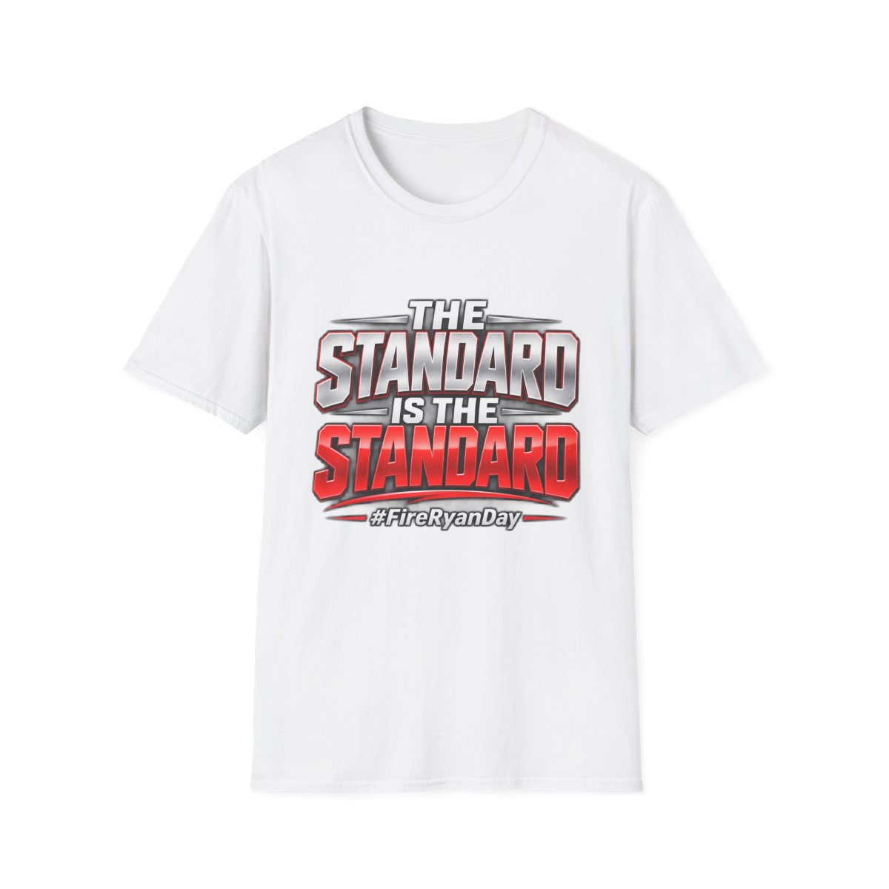

INDEPENDENT FAN SATIRE • NOT AFFILIATED WITH OHIO STATE
BORN ON THIRD.
STILL TRYING TO
STEAL HOME.
The wins are real. So are the losses. The jokes are ours.
01 / THE RECEIPTS
THE NUMBERS DON'T BLINK.
Coaching statistics through November 21, 2026. AP rankings refer to opponents ranked in the AP top five at kickoff.
Sources: Ohio State coaching records · Texas AP ranking · Nebraska result
THE COACHING FAILURE INDEX / DOCUMENTED RESULTS
THE LEADS DON'T LAST.
Ryan Day era situational records from Ohio State's official pre-Nebraska game notes, published November 15, 2026. These are outcomes, not proof of why a game was lost.
These categories overlap and should not be summed. The November 21 Nebraska loss does not change any of these three figures: Ohio State trailed at halftime and was tied entering the fourth quarter.
Sources: Ohio State official Nebraska game notes (situational records) · Nebraska quarter-by-quarter box score
Favorite-loss totals and blown double-digit-lead totals are omitted until verified game by game.
02 / FAN REFERENDUM
KEEP HIM OR FIRE HIM?
Community votes, updated from our database. One ballot per browser identifier; this is an informal, self-selected fan poll, not a scientific survey.
LIVE COMMUNITY HOT SEAT—Loading votes…
—% FIRE—% KEEP
Loading…
Connecting to community poll…
Votes can be changed from the same browser. Clearing browser storage or switching devices can allow additional votes. This poll does not verify identity.
03 / COMPLETELY FICTIONAL
THE EXCUSE GENERATOR.
PARODY — NOT AN ACTUAL QUOTE
“We were one adjustment away from making the adjustment.”
04 / THE ARCHIVES
THE LOSS HALL OF FAME.
All 16 losses, without 16 giant cards. Tap any matchup for the most embarrassing detail, site-wide pain ratings, sources, and a shareable card.
FAN-RANKED MISERY
THE PAIN LEADERBOARD
Site-wide averages from fan ratings. Ranked by average pain, with at least 3 votes required to qualify.
Loading community rankings…
05 / THE MERCH
WEAR YOUR DISAPPOINTMENT.
Independent college football satire gear. The shirts make a statement; the scoreboard does the rest.

Four Quarters, Zero Adjustments
For anyone who has watched the same game plan for four quarters.
SHOP AT PRINTIFY ↗Product photos show selected Printify mockups. See Printify for available colors, sizes, and current prices. Purchases and fulfillment are handled by Printify.